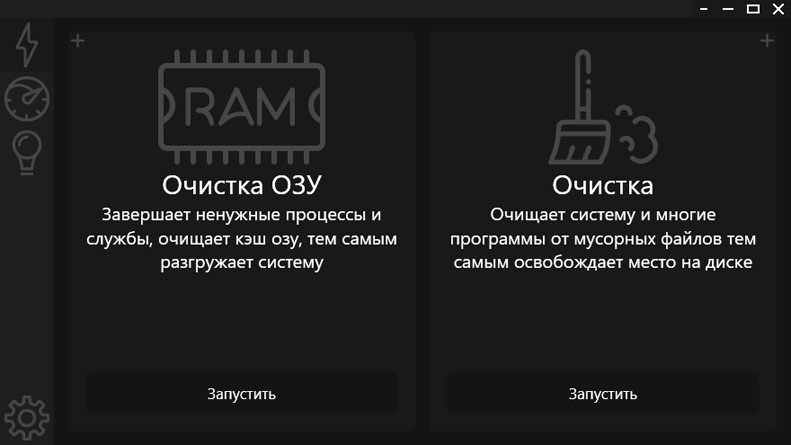

RedLine – Одна из лучших программ для очистки и настройки системы.
(Для Windows 11/10/8.1/7)
Почему RedLine:
Лучшая очистка
У RedLine одна из лучших очисток среди конкурентов, также он имеет “Умную очистку” - которая находит и удаляет мусор со всех дисков
Лёгкость
RedLine весит менее одного мб и не требует установки, соответственно не оставляет мусор в системе
Постоянное развитие
Мы постоянно улучшаем RedLine добавляя новые функции и улучшая старые
Бесплатность
RedLine полностью бесплатен, соответственно весь функционал доступен по умолчанию